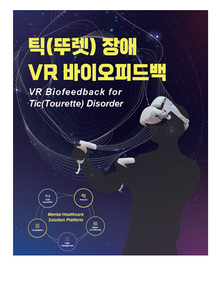
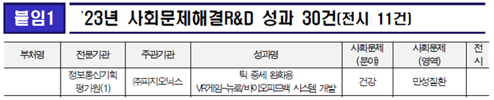

과학기술정보통신부 『사회문제 해결 R&D 우수성과』 건강분야에 피지오닉스 선정
안녕하세요 피지오닉스 입니다!
이번에도 기쁜 소식을 들고 찾아오게 되었습니다
「제3차 과학기술 기반
사회분제해결 종합계획」 이행 관련하여
과학기술정보통신부, 산업통장자원부 등 23개 중앙행정기관 및
대전광역시 등 8개 지방자치단체에서 수행된 사업 중에서
피지오닉스가 수행했던 틱장애 관련 연구개발이
사회문제해결에 대한 건강분야 우수성과로
과학기술정보통신부로부터 인정받았습니다!


틱장애는 근육이 반복적인 불수의적 움직임을 특징으로 하는 질환으로
주로 학령 아동기에 흔하게 발병하는 질병입니다.
방치하면 만성칙, 뚜렛증후군 사회적응력 문제 등의 문제가 야기되며
더 나아가 본인 뿐만 아니라 주변인까지 삶의 질이 저하 될 수 있습니다.
저희는 『틱 증세 완화용 VR게임-뉴로/바이오피드백 시스템』을 통해
위와 같은 사회문제를 해결할 수 있는 방법에 접근했으며
VR게임-뉴로/바이오피드백 시스템 기반 틱장애
완화 훈련프로그램으로
저비용･고효율 의료기술 개발 및 장애인･보호자의
삶의 질 개선할 것으로 기대하고 있습니다.
이번 우수성과 선정에서 더욱 뜻깊은 점은
해당 조사가 대국민 투표를 통해서 선정되었다는 점인데요,
특히 사회 문제 분야 중에 건강(만성질환) 분야에서는
피지오닉스와 서울대학교병원만이 우수성과로 인정받았습니다.
https://www.ntis.go.kr/scisoplatform/performance.do?sprSeq=16559
피지오닉스에서는 연구개발 성과를 현장에 적용하여
사회적 문제를 해결하고
국민들에게 해당 성과가 적용될 수
있도록
앞으로도 노력하고 앞장서는 기업이
되겠습니다!
많은 관심과 응원 부탁드려요.
감사합니다!
자세한
사항은 아래 전화번호로 문의 가능하며 홈페이지 및 블로그를 참고해주세요~
Tel)
042-867-7880